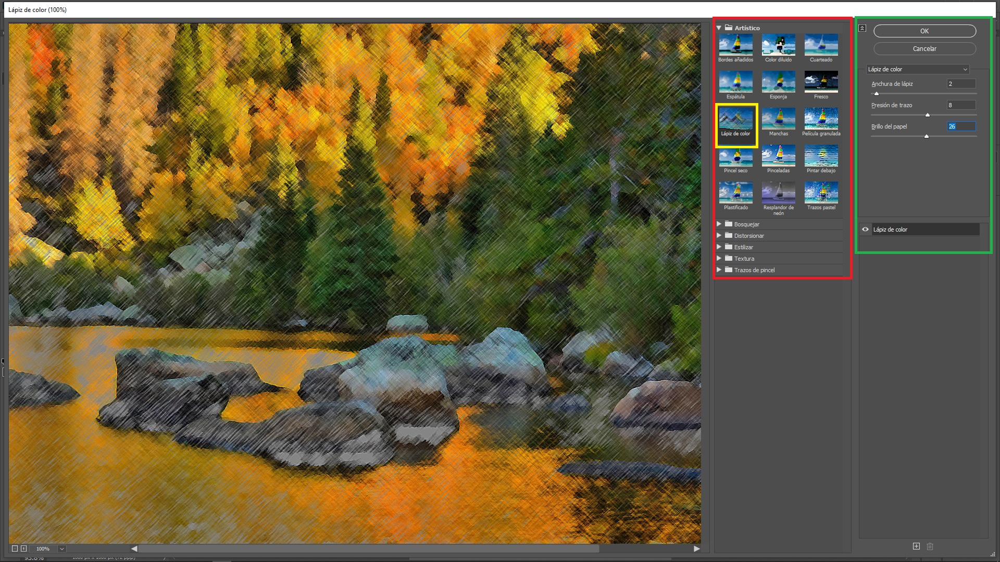
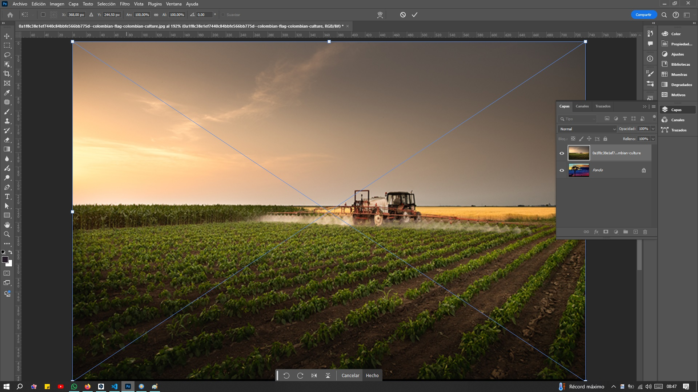
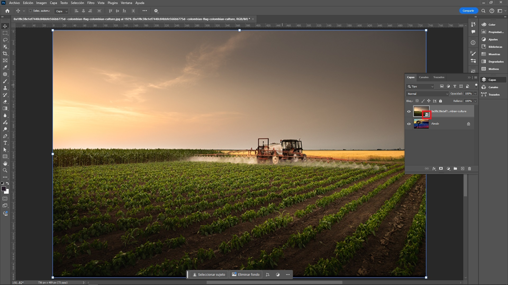
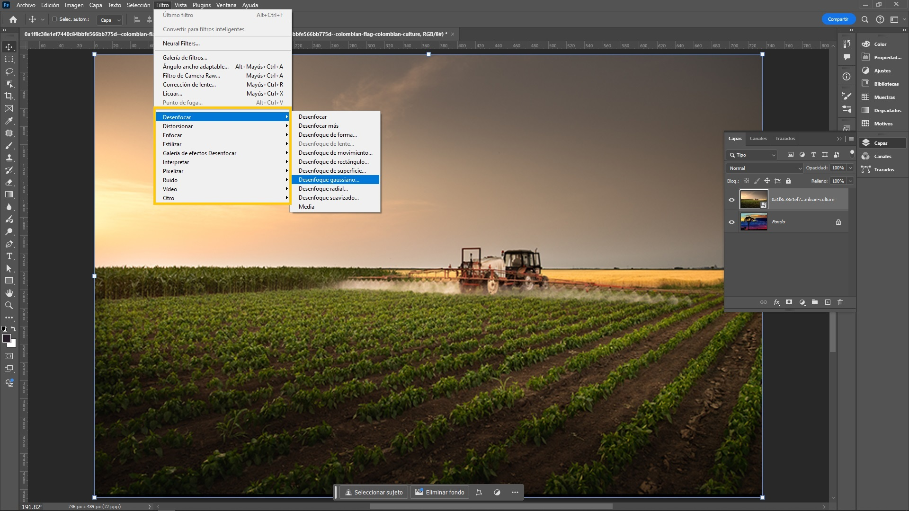
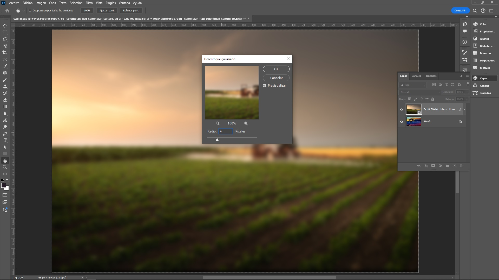
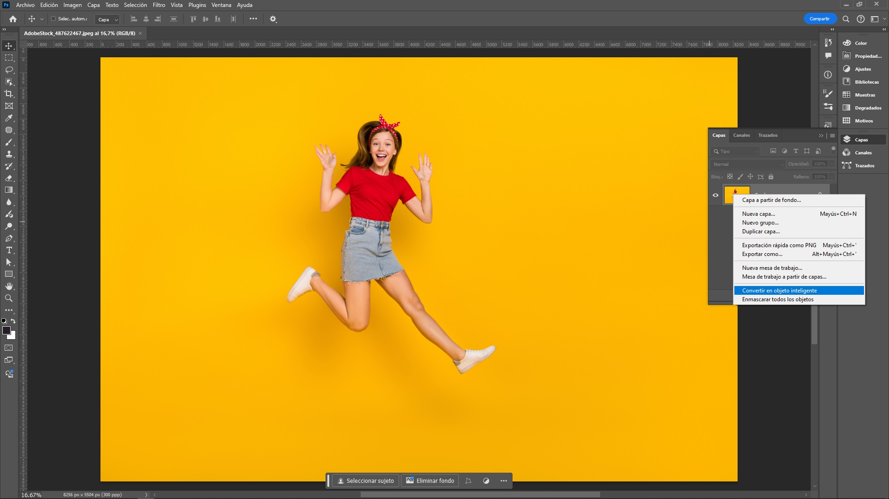
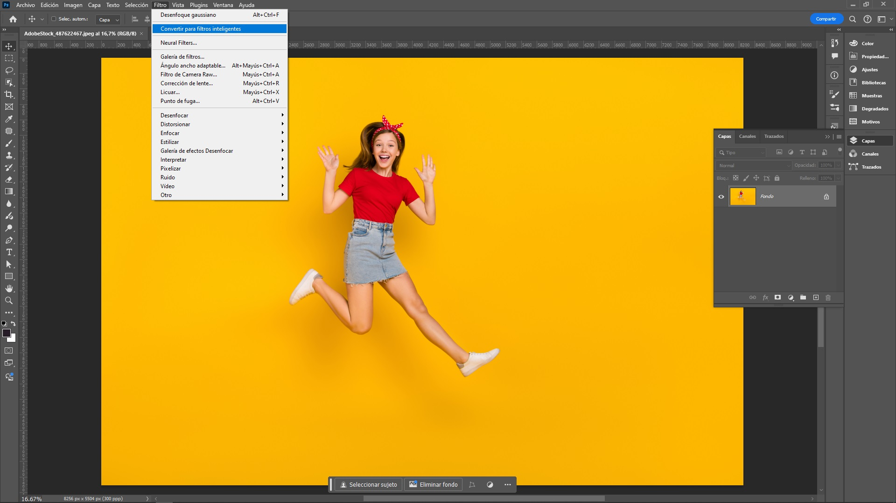

Adobe Photoshop proporciona una extensa variedad de filtros
diseñados para aplicar efectos visuales, realizar ajustes y
modificar imágenes de manera creativa y profesional. Estos
filtros permiten mejorar la nitidez, suavizar imperfecciones,
aplicar desenfoques, corregir el color, generar efectos
artísticos, simular texturas y transformar fotografías con
distintos estilos. Además, pueden combinarse entre sí para
lograr resultados más complejos y personalizados, ofreciendo
así un alto grado de flexibilidad en la edición y el diseño
gráfico.
Galería de Filtros
Una galería de filtros en Photoshop es una herramienta que
permite aplicar una variedad de efectos a una imagen para
modificar su apariencia de manera creativa o correctiva. Estos
filtros se encuentran organizados en categorías y pueden ser
personalizados en términos de intensidad, tamaño y otros
parámetros.
Para ir a la galería de filtros hacer clic en el menú
principal en:
Filtros > Galería de Filtros.

Galería de Filtros en Photoshop
A continuación se detallan algunos de los filtros más comunes
que se encuentran en la
galería de filtros:
Artísticos: Convierten las
fotos en obras de arte, imitando diferentes estilos de
pintura, dibujo o grabado.
Bosquejar (Sketch): Transforma
una fotografía digital en una representación visual que
simula un dibujo a mano.
Distorsionar (Distort): Alteran
la forma de la imagen, creando efectos como el abombamiento,
el plegado, el giro o la ondulación.
Estilizar: Transforman una
imagen digital en una obra de arte, imitando diversas
técnicas artísticas tradicionales. Estos filtros aplican
efectos visuales que simulan diferentes estilos de pintura,
dibujo y grabado.
Textura: Añaden distintas
texturas a la imagen, como lienzo, papel, tela o incluso
ruido, creando una sensación de profundidad y materialidad.
Trazos de Pincel: Es una
herramienta poderosa que permite transformar lss imágenes
digitales en obras de arte que simulan haber sido creadas
con diversas técnicas de pintura. Estos filtros aplican
diferentes estilos de pinceladas a la imagen, imitando la
apariencia de pinceles reales, desde los más suaves y
delicados hasta los más texturizados y expresivos.
Cada filtro posee diferentes
opciones de ajuste,
estas se ajustan de acuerdo a las necesidades del usuario.
En la imagen anterior se uso e filtro de
Lápiz de Color.
Desenfoque con Filtro Inteligente
El desenfoque con Filtro Inteligente en Photoshop es una
técnica avanzada que permite aplicar un filtro de desenfoque a
una imagen de manera no destructiva. Esto significa que se
puede ajustar o eliminar el efecto en cualquier momento sin
modificar permanentemente los píxeles originales de la imagen.
Pasos para aplicar un Desenfoque con Filtro Inteligente
Cargar la imagen: en el menú
principal:
Archivo > Colocar Elemento Incrustado... >

Desenfoque con Filtro Inteligente - Cargar la Imagen
en Photoshop
Convertir la imagen en Inteligente:
hacer doble clic sobre la imagen recién colocada.

Desenfoque con Filtro Inteligente - Convertir la
Imagen en Photoshop
En el panel de capas se puede ver un icono que dice que la
imagen es
Inteligente
lista para usar los filtros sobre ella.
Aplicar el filtro de Desenfoque: En el menú principal escoger:
Filter > Desenfocar > Desenfoque Gaussiano... >

Desenfoque con Filtro Inteligente en Photoshop -
Aplicar el filtro de Desenfoque
En esta opción del menú están los
Filtros Inteligentes, se ha escogido el desenfoque gaussiano.
Ajustar los parámetros del filtro: En este caso se cambio de 1px a 4px el parámetro radio.

Desenfoque con Filtro Inteligente en Photoshop -
Ajustar los Parámetros del Filtro
Editar el Filtro Inteligente:
Después de aplicar el filtro, se nota que aparece como
un
filtro inteligente debajo de la capa en el panel de capas.
Para modificar el desenfoque, haga doble clic sobre el
nombre del
filtro aplicado, y se abrirán nuevamente las opciones de ajuste para
que lo edite sin perder calidad ni alterar la imagen
original.
Desenfoque con Filtro Inteligente en Photoshop -
Editar el Filtro Inteligente
Ventajas de utilizar Filtros Inteligentes
Edición no destructiva: Los
cambios son reversibles en cualquier momento sin perder
calidad.
Ajustes en tiempo real:
Permite modificar los filtros sin tener que rehacer toda
la edición.
Máscara: El uso de máscaras
permite un control más preciso sobre qué partes de la
imagen se ven afectadas por los filtros.
Convertir a Filtro Inteligente
Convertir una capa a Filtro Inteligente en Photoshop es
fundamental para aplicar filtros de manera no destructiva,
permitiendo ajustes y modificaciones futuras sin alterar la
imagen original. El proceso consiste en convertir la capa en
un Objeto Inteligente, lo que permite que cualquier filtro
aplicado se convierta automáticamente en un Filtro
Inteligente.
Pasos para convertir una capa a Filtro Inteligente:
Abrir el archivo en Photoshop.
Seleccionar la capa a convertir.
Convertir la capa en un Objeto Inteligente:
Hacer clic derecho sobre la capa seleccionada y elegir
la opción "Convertir en Objeto Inteligente".

Convertir a Filtro Inteligente en Photoshop -
Convertir la capa en un Objeto Inteligente
Alternativamente, se puede ir al menú superior y
seleccionar
Filtro > Convertir en objeto inteligente >.

Convertir a Filtro Inteligente en Photoshop -
Convertir la capa en un Objeto Inteligente,
Alternativa
Una vez convertida, verá un pequeño icono en la esquina
inferior derecha de la miniatura de la capa, lo que
indica que ahora es un Objeto Inteligente.
Aplicar Filtros Inteligentes.
Editar el Filtro Inteligente.
Utilizar la Máscara de Filtro Inteligente
(opcional).
COMENTARIOS
Si tiene alguna inquietud, duda o ha encontrado algún error, por
favor infórmelo a través del formulario disponible para este
propósito.